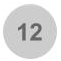
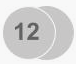

Enter the search key word in search bar and click ‘Visualize!’ button.
How to view the search result?
Space below the search bar will construct the results in visual network arrangement.
How are the datasets arranged in the visualization area?
Dataset without any relation will be spatially arranged. Dataset that related to other dataset will be arranged closer to each other. Column names that are common between the dataset connects the related dataset.
How are the related columns differentiated from other types?
- Date or time columns are represented with calendar/clock icon.
- Number is represented with number "12" within circle. It includes both integer and non integers.
- Text is represented with alphabet "a".
- Columns that are not related are only in grey. Columns that are related has sky blue ring to icon.
Table 1. Legend for Node Types
|
Datetime |
Number |
Text |
| Non-intersecting column |
|
 |
|
| Intersecting column |
|
 |
|
Can user arrange the datasets and its columns?
Yes. The user can arrange the datasets and columns as per their need and convenience. Single click on any dataset will make the entire result visualization flexible and interactive.
How to freeze the visualization?
Once the user has arranged the dataset or column names, single mouse click on the dataset will freeze the visualization display.
How to know additional information about dataset?
Move the mouse pointer over the dataset. Small pop-up window displays the dataset size and total number of records in it.
How to know additional information about columns within dataset?
Move the mouse pointer over the column icon. Small pop-up window displays abstracted information depending on the column data type. Possible value ranges will be shown based on data attributes:
- Nominal attributes - Mode. E.g., frequently occuring Route id.
- Binary attributes - All occuring binary values. E.g., wheel boarding or not.
- Ordinal attributes - Range of value occuring within dataset. E.g.: ranking.
- Numeric attributes - Average and range.